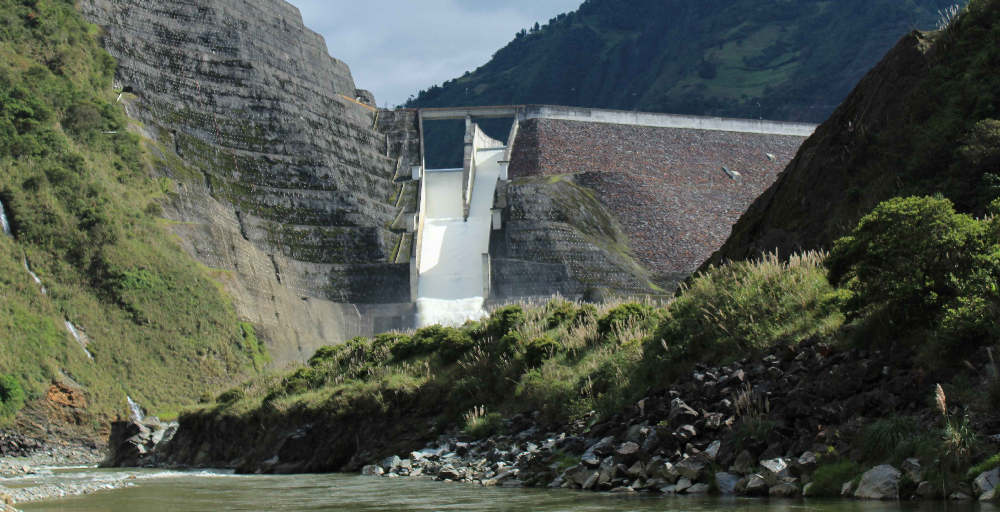
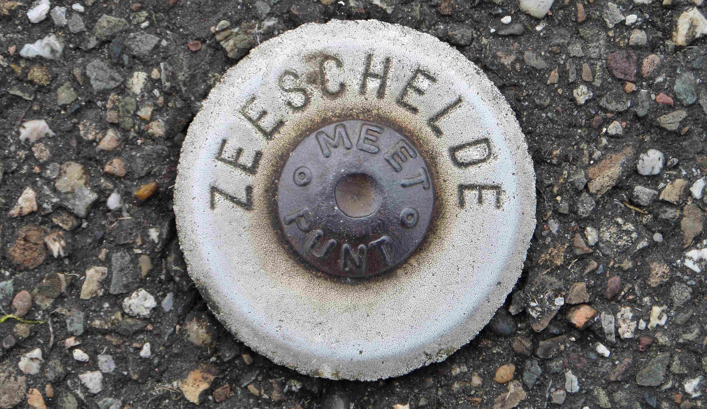
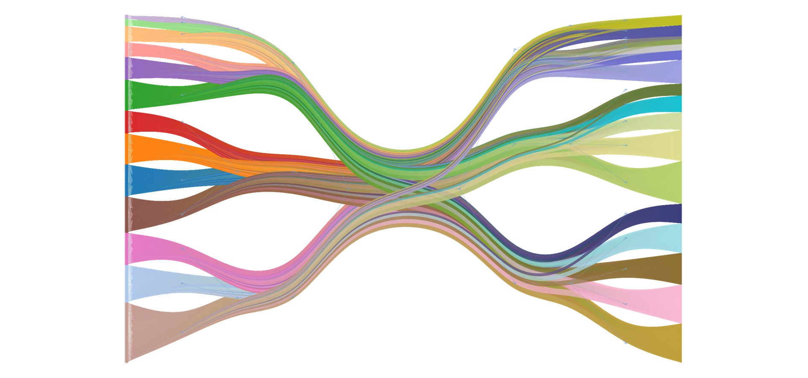

Hydropower is a well-known and popular alternative to the burning of fossil fuels due to its simplicity and relatively low cost.
Unfortunately, these hydropower installations tend to have an impact on the environment. The HydroCORE project uses this notice
as a basis to perform its activities, while using the Paute river basin in Cuenca (Ecuador) as study area. To communicate the
findings, a project-specific website has been developed for
HydroCORE.

The Scheldt river finds it origin in France and continues its path through Belgium and the Netherlands, where it connects to the North Sea.
Tidal activity runs as deep as the city of Ghent, where sluices prevent further intrusion of the tide and help maintain a stable water level
within the city. The wide variety of activities around and within the Scheldt estuary basin affects the inherent characteristics of the river,
though multiple mitigation strategies are in place to (continue to) improve the functioning of the Scheldt estuary. Every six years, an extensive
T-report brings the monitoring data of the past six years together and evaluates the condition of the Scheldt estuary against a set of predefined
criteria. The latest version covers the period 2016-2021 (T2021) and is being written by HKV, Antea Group, Waardenburg Ecology, and Ghent University.
More information can be found on the website of VNSC
(in Dutch) and on the Scheldemonitor (the platform for all Scheldt-related information).

The human brain is a complex structure and deviations can occur both at the structural and functional level. Deviations at the
functional level (e.g., depression, schizophrenia, bipolar disorder) tend to be diagnosed based on interviews and associated
symptom scores. More objective techniques to diagnose patients are desired, one of which is the use of functional neuroimaging
techniques (e.g., EEG, PET, fMRI). The temporal profile of these fMRI signals are unique, though expected to be consistent among
subjects of the same patient group. These patterns can be assessed through an alternative representation of the data as a bipartite
network (signal-subject) and cluster inference via topic models. The obtained results show that clustering of patients based
on the fMRI signals is possible, but suggest that there is another factor that steers the clustering (i.e. the infered clusters did
not represent the known patient groups). More information of the project (available data, methodology, results) can be found in the
report (UGent only) while the underlying scripts can be found on
GitHub.